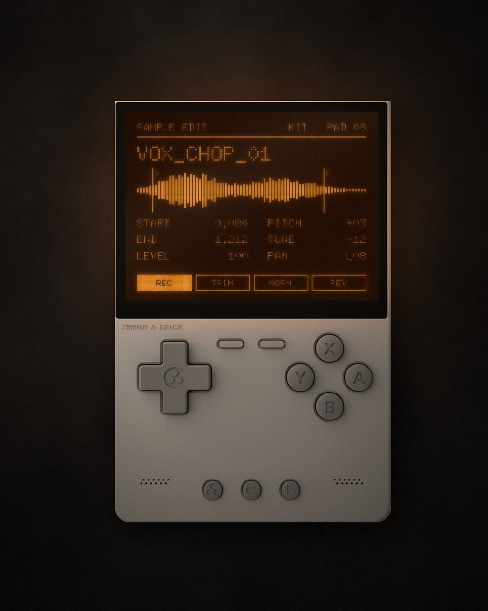

A sampler for the TrimUI Brick · KNULLI · v1.4
Sample it.
Play it.
Pocket it.
An 80s/90s-style sampler that runs on a handheld. Record from the mic, loop and chop what you caught, map it across 16 pads or play it chromatically, then shape it with an LFO and the FX section. Plug in a MIDI keyboard and it answers in 8 ms.
[DOWNLOAD LINK] · Free and open source (GPL-3.0)

FEATURES
KIT MODE
A different sample on each of the 16 pads, on MIDI notes 36–51 (General MIDI drum layout). Pads are one-shot and choke themselves when you hit them again.
CHROMATIC MODE
One sample across the keyboard, 8 voices, sustain pedal and pitch bend. Attack, decay, sustain, release and velocity on every slot.
MIC RECORDING
Sample straight from the Brick's microphone at 32, 44.1 or 48 kHz, 8, 16 or 24 bit. Every take gets a name before it's saved.
LOOPS
Loop points set apart from start and end, so the attack plays once and the body repeats. A crossfade hides the join, a close-up shows the seam, Zero Snap finds a clean point.
CHOP
Cut a break or a phrase into 4, 8 or 16 equal slices, or let it find the hits on its own. The slices land on the pads, ready to play.
TIME-STRETCH
Make a sample 50% to 200% as long without changing its pitch. The result is saved as a new file, the original stays as it was.
LFO
Sine, triangle, saw, square or sample-and-hold, on pitch, volume and filter cutoff. Delay to fade it in, mod wheel to ride the depth.
FX SECTION
Drive, bitcrush, downsample, a resonant low/high/band-pass filter, stereo delay with ping-pong, and reverb. Each section switches off with one button and keeps its settings.
MIDI LEARN
Any USB MIDI keyboard or controller. Point at an FX or LFO value, turn a knob, and that knob is now in charge. The map stays for every project.
8 MS LATENCY
The audio engine runs in C on its own real-time thread, apart from the screen. Fast attacks on a piano feel immediate.
PROJECTS
Save as many projects as you like, each with its own samples, settings, LFO and FX. Rename or delete samples from the browser.
DOT-MATRIX SCREEN
Flat, single-colour LCD look with big text and big numbers. Orange, blue, red or green, like the displays of the period.
CHANGES
- 1.4New EDIT page with loop points, crossfade and Zero Snap. Chop onto pads, time-stretch, the LFO page and MIDI learn.
- 1.2.3Audio engine rewritten in C on its own thread. MIDI latency down to 8 ms, with a Low / Mid / Safe setting.
- 1.2Named projects, sample rename and delete, a name for every take, on/off switch for each FX section, four display colours.
- 1.1Settings page: recording sample rate and bit depth, engine status.
- 1.0Kit and chromatic modes, FX, MIDI in, mic recording, the dot-matrix screen.
WHY I BUILT IT
A sampler was the one instrument I never owned. So I made my own, for a device that fits in a pocket.
It takes the workflow I liked in 80s and 90s samplers, Akai especially, and keeps the useful parts. The old limits stay in the past: no 12-bit mode, no memory juggling.
— Alessandro Pietrosanti
INSTALL
Runs on the TrimUI Brick with KNULLI. Nothing else to install: everything it needs is in the folder.
- 01Download the latest release. [LINK]
- 02Copy the bricksampler folder and BrickSampler.sh to roms/ports on the SD card.
- 03Launch BrickSampler from Ports in KNULLI. Your WAVs go in bricksampler/samples.
Hold SELECT for the controls. MENU + START closes the app. Tested on KNULLI Scarab.
Coming in 2.0
WAVE SEQUENCING
I used to own a Korg Wavestation, and its wave sequences were the thing I missed most. In 2.0 they come to BrickSampler, built from your own samples.
Record a few sounds, line them up as steps, and one key plays them in turn: each step with its own length, level and tuning, sliding into the next with a crossfade or cutting straight to it. Loop part of the sequence, back and forth if you like, and move through it with velocity or the mod wheel.
It's a switch on the sample page. Leave it off and the slot plays a single sample, as now.
PER STEP
Sample · duration or gate · crossfade · level · coarse and fine tune
PER SEQUENCE
Start step · loop start and end · forward or back-and-forth · repeats or endless · tempo and time scale · key sync or free-running
CONTROL
Start step by velocity · mod wheel scans the sequence · LFO on step timing
- Wave sequences built from your samples, switchable per slot and per pad2.0
- Knobs and faders on the main parameters, drawn light enough for the Brick2.0
- Vector mix of up to four sequences, moved by an envelope or two MIDI knobs2.x
- Recording and playback through a USB-C audio interfaceLater
NO BRICK YET?
BrickSampler runs on the TrimUI Brick, a small handheld console, with KNULLI on its SD card. The app is free: the Brick is the only thing you need to buy.
[REFERRAL LINK] · This is an affiliate link: if you buy through it, I get a small commission and you pay the same price. It helps me keep the apps free.